Namerikawa, Toyama: things to do, food and stays
Namerikawa · Toyama
Namerikawa
Highlighted on the Toyama map.

Stay
くらすサウナつるぎ
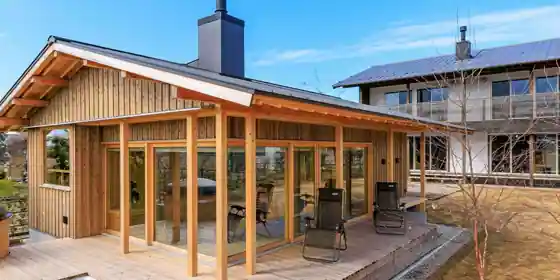
Kurasu Sauna Tsurugi
Inn in Tera, Namerikawa with a sauna.
スカイホテル滑川
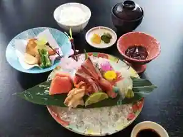
Sukai Hotel Namerikawa
Hotel in Tatsuno, Namerikawa with breakfast available and parking.
HOTEL R9 The Yard 滑川
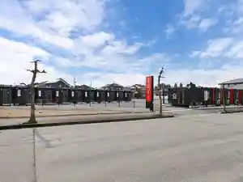
HOTEL R9 The Yard Namerikawa
海老源
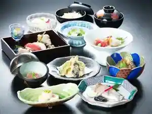
Ebi Gen
Dining
祭ばやし 滑川店
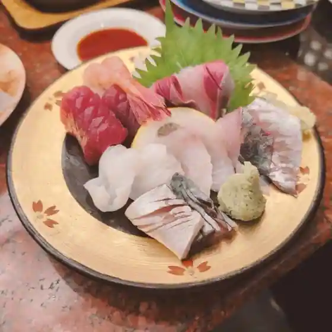
Matsuri Bayashi Namerikawa
光彩
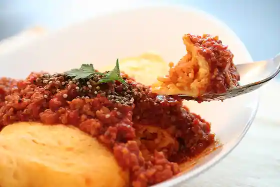
Kosai
レストラン つるぎ
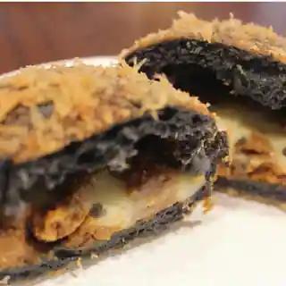
Restaurant Tsurugi
ほたるいかミュージアム
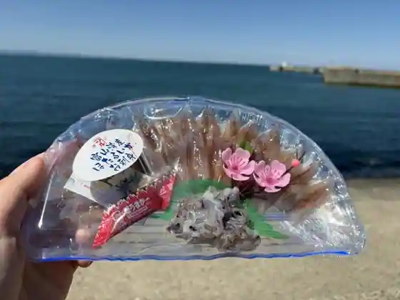
Hotaruika Myujiamu
かじやばし
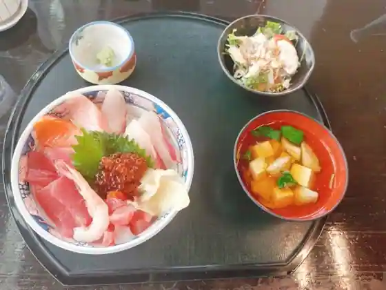
Kajiyabashi
みち カフェ ウェーブ
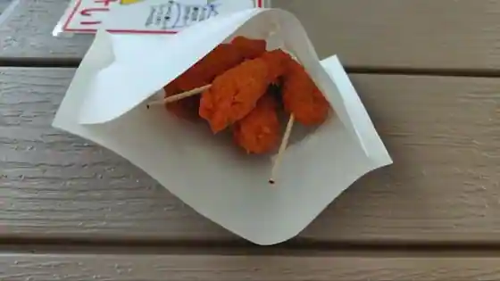
Michi Cafe Uebu
海老源 海遊亭
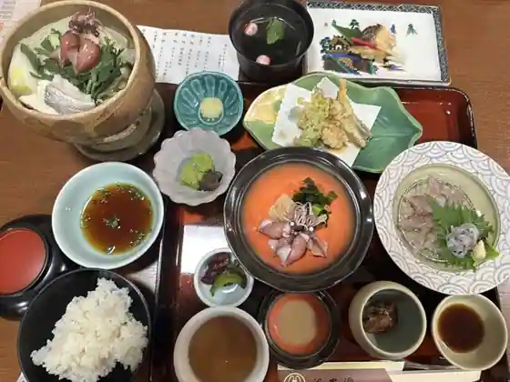
Ebi Gen Kaiyu Tei
割烹あらき
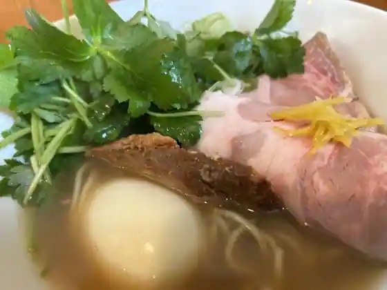
Kappo Araki
東福寺野倶楽部
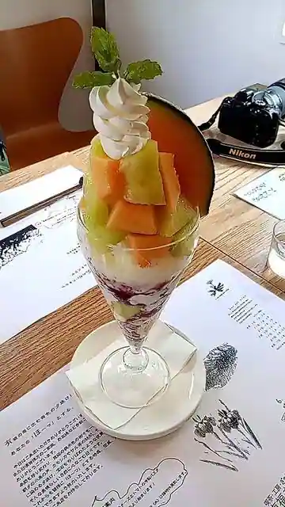
Tofukuji No Kurabu
うずや
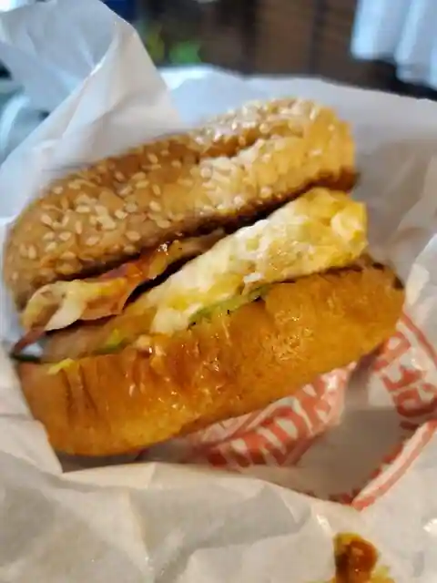
Uzuya
ラーメン和草
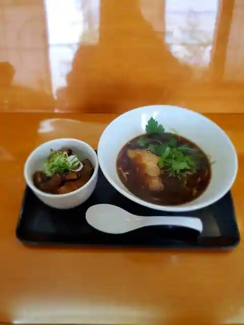
Ramen Wa Kusa
フィオレンティーナ
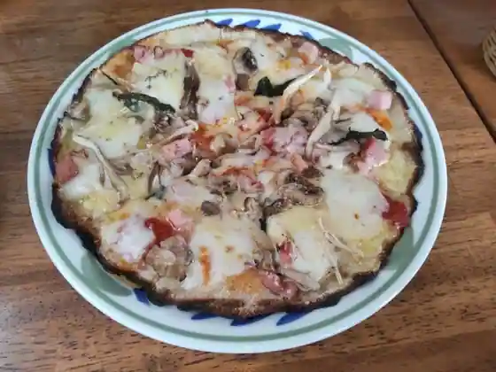
Fiorenteina
魔法のパン屋
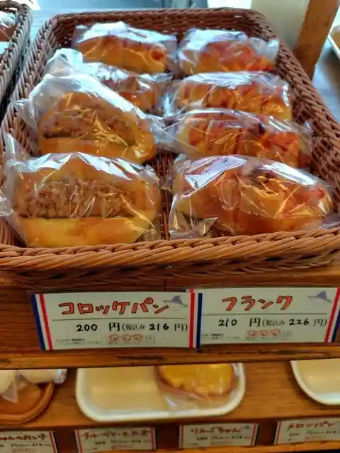
Maho No Bakery Ya
インディアンハット 滑川店
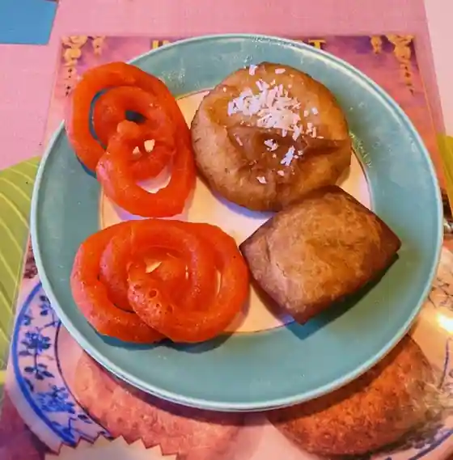
Indianhatto Namerikawa
OKONOMIYAKI UZU
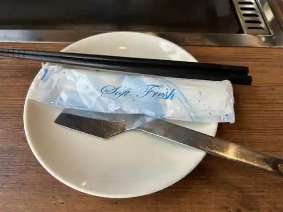
OKONOMIYAKI UZU
ハンモックカフェ アマカ
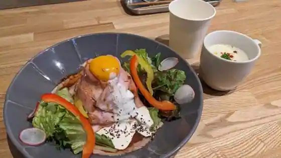
Hanmokku Cafe Amaka
蕎麦かふぇ 美楽
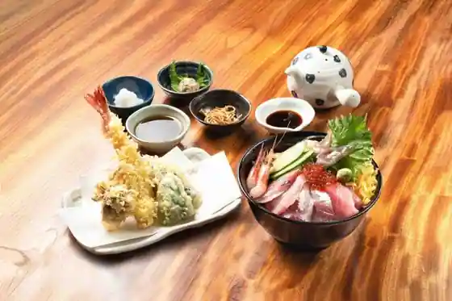
Soba Cafe Bi Raku
ベッカライ・クラモト
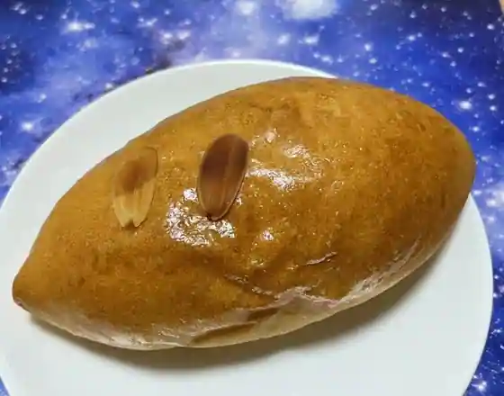
Bekkarai Kuramoto
patisserie Ito
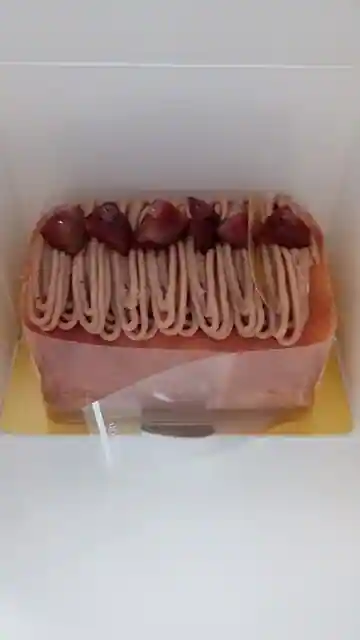
patisserie Ito
カネツル砂子商店
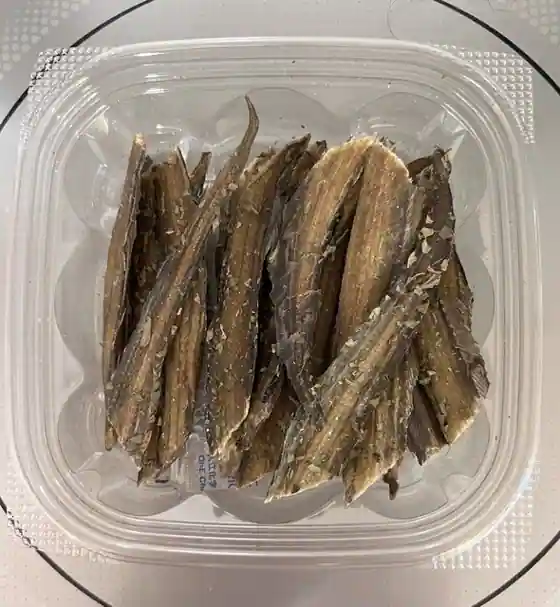
Kanetsuru Isago Sho
リンデンバウム 滑川店
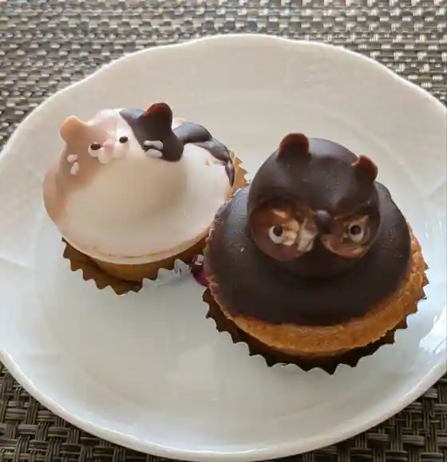
Rindenbaumu Namerikawa
Sights
Hotaruika Kaijo Kanko
Hotaruika Museum

Toyamawan Kishi Kurujingu

Roadside Station Uebu Park Namerikawa

Namerikawa Tami Koryu Plaza (Airabu Yu)

Namerikawa Seaside Park Campground
Hisashi Shi Sakanaryori Kosugi Nagomi
Kajiyabashi
Namerikawa Ritsu Museum
Namerikawa Shukuba Kairo to Kyu Miyazaki Shuzo
Pa no Ramaresutoran Kosai
Tofukuji no Nature Park
BISTRO CesT la Vie Sosaku Bisutoro Seravi
Namerikawa Granvilla Grappa
Ebi Gen Resutoran Kaiyu Tei
Akuapogatto
Gyoda Koen to Hana Shobu
Hotaruika no Hakko Sho
Fuji Fuirumumanyufakuchiaringu Toyama Jigyosho
Mi no Wa Onsen Tenisu Village
KAKIAMI (Kakiami)
Tarasopia
Kurasu Sauna Tsurugi
Hon'e Iseki
Kappo Araki
Shokuji Tokoro Tenkatsu
Namerikawa Yakusho